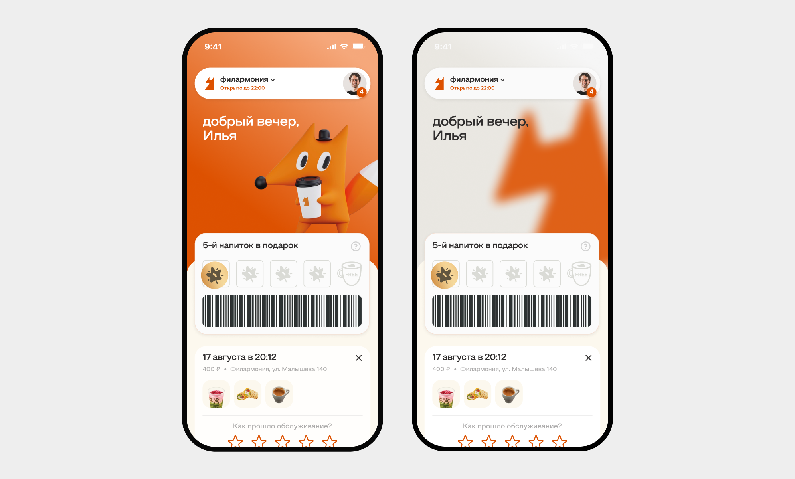
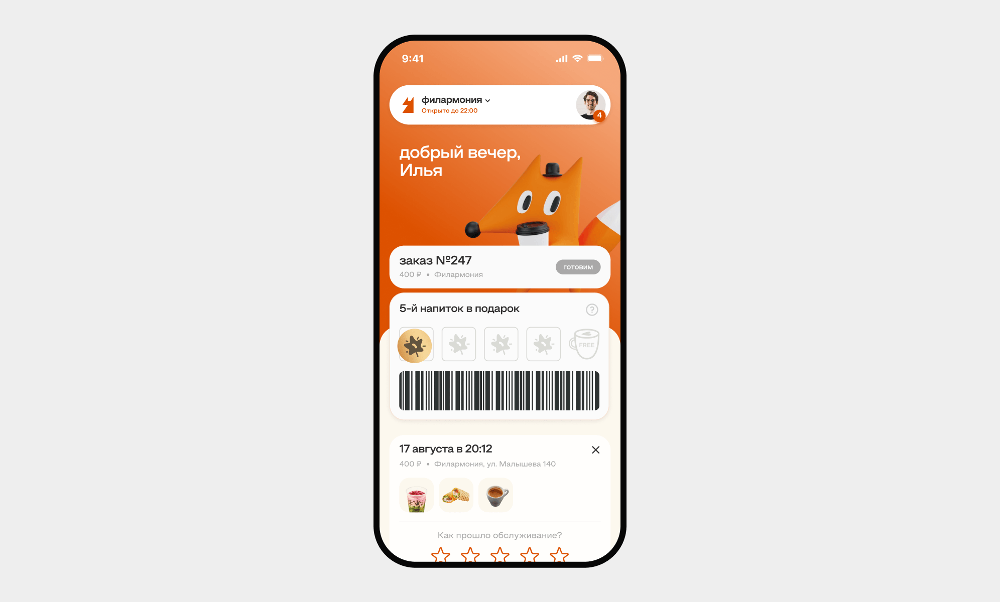
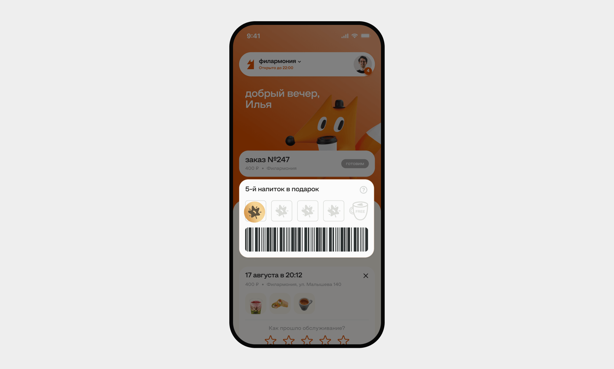
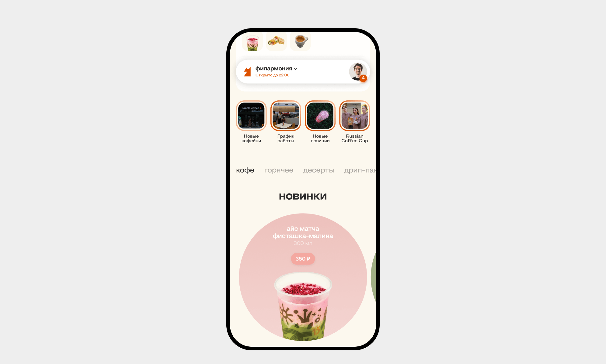
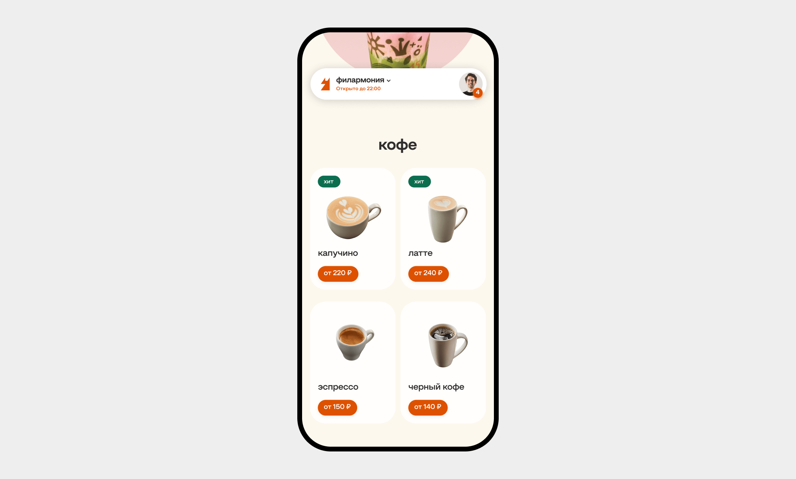
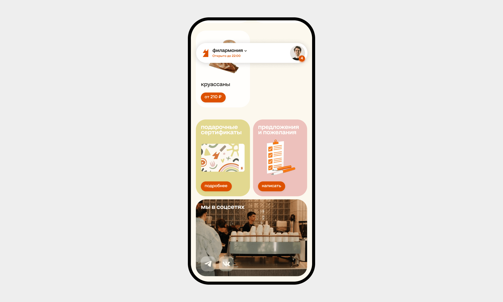

О проекте
Simple Coffee — крупнейшая сеть кофеен на Урале. Насчитывает 25 заведений в Екатеринбурге.
Проблема
Компании требовалась цифровизация системы лояльности. Раньше у клиентов были пластиковые карточки, на которые клеили стикеры. Потом эти карточки обменивали на бесплатный напиток. Но такая система обладает двумя существенными минусами:
- Карточки часто теряются, и весь прогресс просто сгорает
- Карточку можно забыть дома и не получить стикер
Задача
Сделать концепцию дизайна мобильного приложения, с помощью которого пользователи могут:
- отслеживать прогресс программы лояльности
- заказывать напитки
- оценивать обслуживание
- узнавать новости
Концепция

У бренда есть маскот — лиса. Я решил строить концепт вокруг маскота, так как клиенты уже привыкли к образу. Изначально у меня было два варианта:
- трехмерная лиса со стаканом
- векторная лиса из логотипа
В итоге я остановился на первом варианте.
Дизайн

В рамках одного экрана я разместил самую важную информацию для пользователя:
- верхнее меню с выбором заведения и возможностью перехода в профиль
- статус текущего заказа
- плашка с картой лояльности
- плашка с оценкой последнего посещения, если такое есть
Программа лояльности

Отдельно остановлюсь на виде плашки с картой лояльности. Я специально оставил вид пластиковой карты, которая уже знакома клиентам.
Таким образом внедрение цифрового носителя пройдет гладко и безболезненно даже для самой консервативной аудитории.
История и новинки

Так как кофейня активно ведет соцсети, то я решил добавить сюда блок с новостями в виде историй. Такой формат позволяет дополнительно «очеловечить» бренд и рассказывать клиентам о новостях.
Новинки я выделил с помощью акцентной формы круга.
Позиции

Плитку с позициями я решил просто сделать на аккуратных белых плашках.
Сертификаты и соцсети

В самом конце есть плашки с сертификатами, обратной связью и переходом в соцсети.